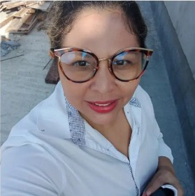
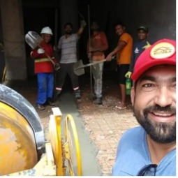

Profissionais da HP Engenharia
Engenheira Helna Silva

Olá me chamo Helna Louise Santos da Silva, sou formada em Engenheria Civil pela UFPA, tenho 18 anos de formação acadêmica, já trabalhei como Engenheira Estrutural e Projetista Pela FAB(Força Area Brasileira) durante 8 anos.
Engenheiro Paulo Nery
Olá me chamo Paulo André Da Silva Nery, sou formado em Engenheria Civil pela UFPA, tenho experiências em diversas obras publicas, como o minha casa minha vida, viver ananideua, etc.